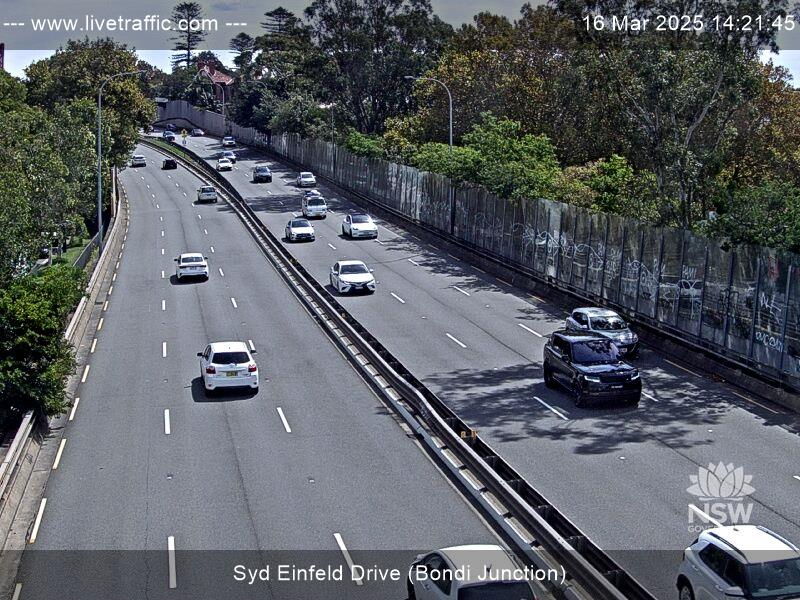

AI Based Anti-Social Driving Detector
This project was done with a team of 6 members, Roshan Kumar, Lei Nero Garcia, Seniru Basnayake, Chun Hin Carven Suen, Aryan Raheja and myself. My role mainly consisted of making the dataset, developing pseudocode, training the model and creating the testing videos.
This project detects anti-social driving behaviour, or just bad driving, through the perspective of traffic cameras in NSW. An object detection model is trained on a dataset of 1000 hand picked images from livetraffic.com. Afterwards we used Python to track vehicle movement through their bounding boxes by using the X and Y coordinates of those boxes. Once tracking is achieved and smoothened out using Gaussian and Savitzky-Golay filters, we compare the vehicle's angle of direction with their past smoothed angles to detect and monitor the distance between two vehicles to detect poor driving behaviours as classified below:
Illegal U-Turn Detection
Detects when a vehicle performs an illegal u-turn. This is achieved through comparing the current and previous angles, a vehicle is flagged if the difference falls between 160 and 200 degrees. There is also a straight line ratio variable which determines if the path is highly curved or not. To know if the u-turn is illegal there would be a boolean to see whether the road that the camera is facing allows u-turns or not.
Tailgating Detection
Detects when one vehicle follows another too closely for an extended period, this is achieved by assigning leader and follower vehicles. Detection is confidence based and depends on the disance between vehicles, lane positions and alignment. These factors must persist for a certain duration to classify as tailgating.
Swerving/Weaving Detection
Detects any erratic changes in turns using a direction index. This index includes directions such as left, right and straight. The system must detect at least 3 directional turns, with each change sustained for more than 7 frames, then the vehicle is flagged as swerving.
Below is an example of the images we used to train the model:
Although some true positives were overlooked, tailgating detection showed perfect accuracy (1.00) but a recall of 0.60, suggesting high confidence in flagged occurrences. With balanced macro and weighted averages, the task's overall accuracy of 80% demonstrated its resilience.
With an excellent F1-score of 0.82, illegal U-turn identification was aided by distinct angular trajectory parameters. With an F1-score of 0.71, swerving was more difficult, most likely as a result of the noisier lateral movement patterns. For all three classes, the system-wide accuracy was 77%.